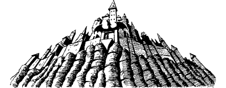

262
The vision of the Nahgoth Forest dissolves and a new one takes its place. It is of a city, perched atop a rocky cliff, surrounded by a wall fortified with towers and grim bastions. Red flames glare from a row of tiny windows and its huge stone gate is emblazoned with the symbol of a fiery dragon.
{kind=link}

‘This is Haagadar,’ says Serocca, cheerlessly. ‘Once it was the home of the Sandai, the rulers of the Great Plains that stretched to the very edge of the strongholds of Earth. They were the first to fall to chaos and now their plains are dead and empty wastelands of sterile rock and poisoned sand. Haagadar was claimed by the Chaos-master and it became his abode but, as his foul empire expanded, he grew tired of it and abandoned it for other, less remote, cities. It lay deserted for an age before outlaws and refugees from Guakor sought sanctuary there from the creatures of chaos. It is now a forgotten city, yet within its heart there lies a secret that even the Chaos-master failed to discover: the Sandai were the guardians of a Shadow Gate. Long had they kept hidden this portal whilst they searched for a means to enter it, for unlike the Shadow Gates of your world, those of the Daziarn are closed. Only those who possess a key can pass from this realm into the universe of Aon.’